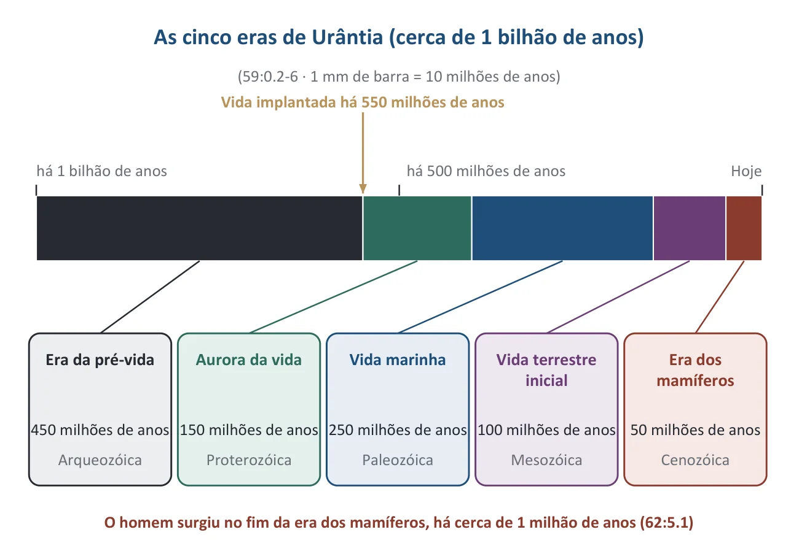
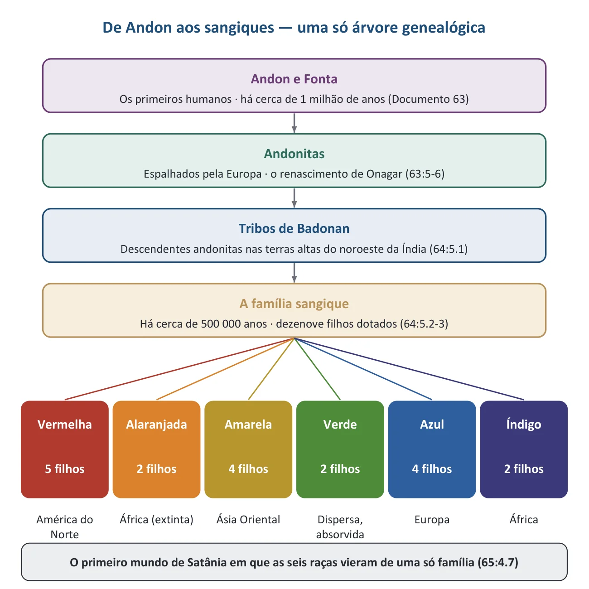
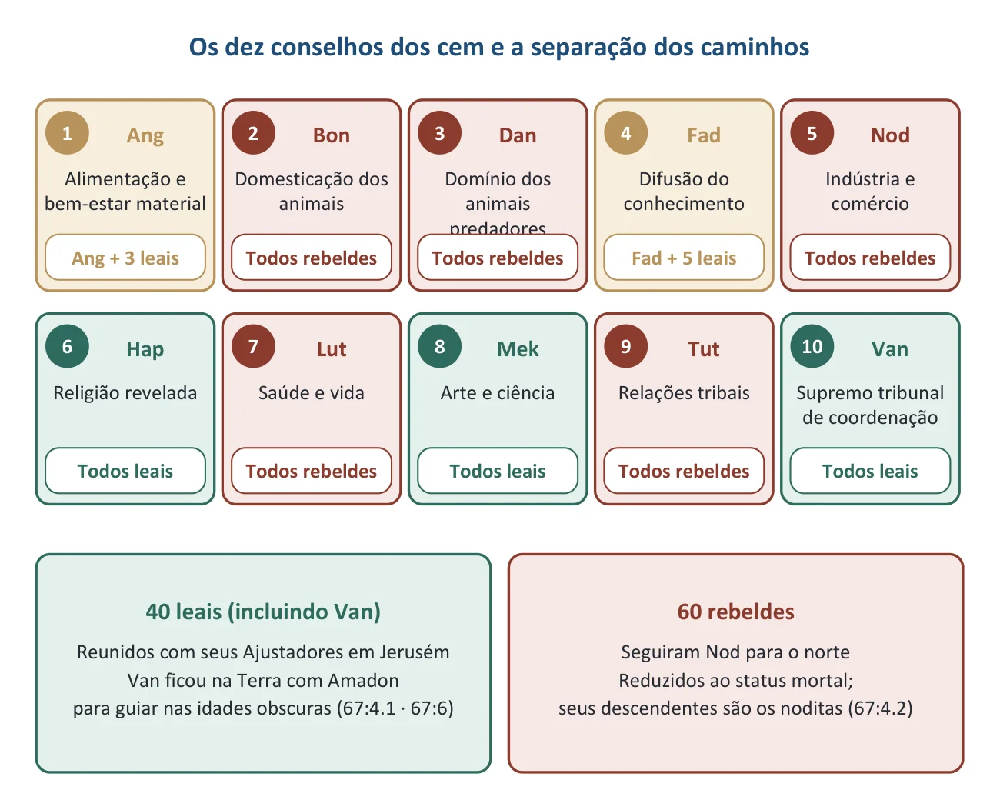

A aurora de um planeta, a manhã da humanidade
Leitura: Documento 57:5, 8 · Documento 58:1, 4, 6 · Documento 59 (introdução) · Documentos 62–65 · Documentos 66–67 (Documento 68, introdução)

A Terceira parte é a história do nosso próprio planeta, Urântia. Os Portadores da Vida esperaram que o mundo amadurecesse e então implantaram a vida nos seus mares, e essa vida subiu a longa escada da evolução com propósito até chegar, há cerca de um milhão de anos, aos primeiros seres humanos, Andon e Fonta. Há cerca de meio milhão de anos as seis raças de cor nasceram numa mesma família e, por volta da mesma época, o Príncipe Planetário, Caligástia, chegou e fundou na Dalamátia a primeira escola da humanidade. O Príncipe aderiu à rebelião, mas Van e Amadon permaneceram firmes até o fim. Nesta semana folheamos o álbum mais antigo da casa da nossa família.
História de abertura
Quem já parou diante de um corte de estrada numa rodovia de montanha viu as camadas: terra vermelha, areia cinzenta, cascalho preto, empilhadas umas sobre as outras como um bolo em camadas. A camada de baixo é a mais antiga, e cada camada acima dela chega mais perto do nosso tempo. Visto de lado, o corte parece um pouco um livro numa estante. Só que este livro é feito de pedra, e cada página levou milhares de anos para se formar.
A Terceira parte de O Livro de Urântia nos convida a ler juntos esse livro de pedra. Durante sete semanas viajamos para fora a partir do Paraíso, pelo superuniverso e pelo universo local. Agora, no fim dessa longa estrada, abrimos a porta da nossa própria casa. E essa casa não é um pedaço de rocha surgido por acaso; ela foi preparada por meio de uma longa espera e do cuidado de muitas mãos.
1. O nascimento de Urântia — de uma nuvem de gás ao primeiro oceano
A visita de Angona
O documento 57 começa há cinco bilhões de anos, com um sol jovem ardendo sozinho no espaço. Então um enorme visitante se aproximou.
Há quatro bilhões e meio de anos, o enorme sistema de Angona começou a aproximar-se da vizinhança do vosso sol, então solitário. O centro desse grande sistema era um gigante espacial escuro, sólido, altamente carregado e possuindo uma tremenda força de atração gravitacional.57:5.4
E à medida que o sistema de Angona se aproximava, as extrusões solares tornavam-se cada vez maiores; mais e mais matéria era retirada do sol e transformava-se em corpos circulantes, independentes, no espaço circunvizinho. Esse estado desenvolveu-se por cerca de quinhentos mil anos, até que Angona aproximou-se ao máximo do sol. Depois dessa aproximação, o sol, em conjunção com uma das suas periódicas convulsões internas, experimentou uma quebra parcial; e enormes volumes de matéria desprenderam-se simultaneamente de lados opostos dele. Do lado de Angona, foi sendo atraída uma vasta coluna de gases solares, pontiaguda em ambas as extremidades e com um bulbo protuberante no centro, e que se destacou permanentemente do controle imediato da gravidade do sol.57:5.6
Essa grande coluna de gases solares, que assim separou-se do sol, posteriormente converteu-se nos doze planetas do sistema solar.57:5.7
O livro chama o sistema solar assim nascido de Monmátia. Aqui ajuda lembrar um princípio da semana 1: a cosmologia desse tipo organiza o conhecimento científico da sua época e está sujeita a revisão (101:4.2). O que guardamos não são os números, mas o fio maior: este lar foi construído segundo um plano.
Um mundo de água
Há um bilhão de anos, deu-se o começo efetivo da história de Urântia. O planeta havia atingido aproximadamente o seu tamanho atual. E, por volta dessa época, foi colocado nos registros físicos de Nébadon e lhe foi dado o seu nome: Urântia.57:8.1
À medida que a crosta esfriava, o vapor de água caía como chuva.
A história geológica efetiva de Urântia começa quando a crosta terrestre se resfria suficientemente para permitir a formação do primeiro oceano. A condensação do vapor de água na superfície em resfriamento da Terra, uma vez iniciada, continuou virtualmente até completar-se. Ao fim desse período, o oceano recobria todo o planeta com uma profundidade média de quase dois quilômetros.57:8.3
No começo a Terra era um mundo de água de pólo a pólo. Mais tarde ergueu-se um único grande continente e, quando ele se partiu e se deslocou, o mar penetrou nele como dedos, formando baías rasas e quentes.
Esses mares e os seus sucessores estabeleceram os registros de vida em Urântia, como foi subseqüentemente descoberto em páginas de pedra bem conservadas, volume sobre volume, à medida que uma era sucedeu à outra, e uma idade à outra. Na realidade esses mares internos das épocas remotas foram os berços da evolução.57:8.26
Cinco grandes eras
CONSIDERAMOS a história de Urântia tendo o seu começo há cerca de um bilhão de anos, abrangendo cinco eras maiores:59:0.1
Essas cinco eras correspondem aproximadamente ao Arqueozóico, ao Proterozóico, ao Paleozóico, ao Mesozóico e ao Cenozóico dos geólogos. Desenhada como uma barra, a era dos mamíferos, em que surgiram os seres humanos, é apenas um curto segmento bem no fim.

| Quando | O que aconteceu | Texto |
|---|---|---|
| Há 4,5 bilhões de anos | Aproximação do sistema de Angona; origem dos planetas | 57:5.4-7 |
| Há 1 bilhão de anos | O planeta atinge o seu tamanho atual; é registrado como “Urântia” | 57:8.1 |
| Há 550 milhões de anos | Os Portadores da Vida implantam a vida nos mares | 58:4.2 |
| Há cerca de 1 milhão de anos | Os primeiros humanos, Andon e Fonta | 62:5.1 |
| Há cerca de 500 000 anos | As seis raças de cor; chegada do Príncipe Planetário | 64:5, 66:0.2 |
| Há cerca de 200 000 anos | A rebelião de Caligástia (300 000 anos depois da chegada do Príncipe) | 66:8.3, 67:2 |
| Há 37 848 anos | Chegada de Adão e Eva (próxima semana) | 74:0.1 |
Palavras novas
- Angona: um enorme sistema de corpos que passou perto do nosso sol há cerca de 4,5 bilhões de anos e dele extraiu o material dos planetas.
- Monmátia: o nome do nosso sol e da sua família de planetas, isto é, o sistema solar.
- Mundo de modificação de vida: um planeta no qual são permitidas experiências para modificar e aperfeiçoar os modelos-padrão de vida. Urântia é um mundo assim.
2. Os que implantaram a vida — os Portadores da Vida e o cuidado da evolução
A espera
Os Portadores da Vida, que conhecemos na semana 5, vieram pela primeira vez a Urântia há seiscentos milhões de anos para estudar as condições. Mas não implantaram a vida imediatamente.
Deve ficar claro que os Portadores da Vida não podem iniciar a vida antes de uma esfera estar amadurecida para a inauguração do ciclo evolucionário. E também não podemos promover um desenvolvimento mais rápido da vida do que aquele que pode ser suportado e acomodado pelo progresso físico do planeta.58:1.2
Subseqüentemente, a comissão de Portadores da Vida de Satânia retornou a Jerusém, preferindo aguardar a quebra posterior da massa continental de terra, o que proporcionaria um número ainda maior de mares avançando terra adentro, e de baías abrigadas, antes de iniciarem de fato a implantação da vida.58:1.6
Nem os seres celestes apressam a estação. São como um lavrador que segura a semente e espera o solo degelar.
Vida implantada em três lugares
Cinqüenta milhões de anos depois, o dia chegou.
Há 550 milhões de anos, o corpo de Portadores da Vida retornou a Urântia. Em cooperação com os poderes espirituais e as forças suprafísicas, nós organizamos e iniciamos os modelos originais de vida desse mundo e os plantamos nas águas hospitaleiras desse reino. Toda a vida planetária (excluindo as personalidades extraplanetárias) até os dias de Caligástia, o Príncipe Planetário, teve a sua origem nas nossas três implantações originais, idênticas e simultâneas de vida marinha. Essas três implantações de vida foram designadas como sendo: a central ou eurasiana-africana, a oriental ou australásica, e a ocidental, que abrange a Groenlândia e as Américas.58:4.2
Os autores também esclarecem um mal-entendido que o seu nome poderia provocar.
Não vos deixeis confundir pelo fato de sermos chamados de Portadores da Vida. Podemos transportar a vida, e nós a transportamos aos planetas, mas não transportamos nenhuma vida para Urântia. A vida de Urântia é única, e original com o planeta.58:4.1
Aquele primeiro mar ainda corre dentro de nós.
Os vossos ancestrais primitivos circulavam livremente no oceano salgado; hoje, essa mesma solução salina oceânica circula livremente nos vossos corpos, banhando cada célula individual com um líquido químico comparável, em essência, à água salgada que estimulou as primeiras reações protoplasmáticas das primeiras células que funcionaram com vida no planeta.58:1.4
Uma evolução com propósito
O Livro de Urântia não nos pede que escolhamos entre a evolução e a criação. As novas espécies aparecem subitamente, e não pelo lento acúmulo de pequenas variações, e o processo é inteiramente natural.
De era para era, aparecem espécies radicalmente novas de vida animal. Elas não evoluem como conseqüência da acumulação gradual de pequenas variações; surgem como novas ordens de vida, plenamente desenvolvidas, e aparecem subitamente.58:6.3
O aparecimento súbito de novas espécies e de ordens diversificadas de organismos vivos é totalmente biológico, estritamente natural. Nada há de sobrenatural ligado a essas mutações genéticas.58:6.4
Ao mesmo tempo, todo o processo se desenrola sob um cuidado vigilante.
É o funcionamento coordenado e integrado dos Portadores da Vida, dos controladores físicos e dos espíritos ajudantes que condiciona o curso da evolução orgânica nos mundos habitados. E é por isso que a evolução — em Urântia, ou em outro lugar — tem sempre um propósito, nunca sendo acidental.65:0.7
Os Portadores da Vida são como jardineiros. Eles não moldam as pétalas com as mãos, mas abrem canais para a água, protegem as plantas novas do excesso de sol e as ajudam a crescer. E até as mãos deles tinham limites.
Os Portadores da Vida podem empregar todos os recursos naturais possíveis e utilizar todas e quaisquer circunstâncias fortuitas que irão elevar o desenvolvimento do progresso da vida experimental; mas não nos é permitido intervir mecanicamente, nem manipular arbitrariamente a conduta e o curso da evolução, seja das plantas, seja dos animais.65:3.2
Esse cuidado também tem um fim. Quando aparecem seres capazes de escolher por si mesmos, os Portadores da Vida se retiram, e o que vem depois é confiado às mãos humanas.
Tudo o que nós, os Portadores da Vida, fazemos para fomentar e conservar as linhagens de vida, antes do aparecimento da vontade humana, o homem deve fazer por si próprio, depois de tudo isso e depois que deixarmos de lado a nossa participação ativa na evolução. De modo geral, o destino evolucionário do homem está nas suas próprias mãos, e a inteligência científica deve, mais cedo ou mais tarde, substituir o funcionamento aleatório da seleção natural descontrolada e da casualidade na sobrevivência.65:3.6
Essas palavras são ao mesmo tempo graves e gloriosas. Deus não mantém os Seus filhos para sempre como bebês que só recebem cuidados. O cuidado sábio do corpo, da mente e da sociedade está agora nas mãos humanas, e receber algo em confiança é também ser digno de confiança.
Esclarecendo um mal-entendido
Um mal-entendido comum: aceitar a evolução não deixa lugar para Deus, e crer em Deus significa rejeitar a evolução. O que diz O Livro de Urântia: o aparecimento de novas espécies é totalmente natural (58:6.4), mas a evolução tem sempre um propósito, porque os Portadores da Vida, os controladores físicos e os espíritos ajudantes a guiam juntos (65:0.7). Os métodos da natureza e o cuidado do céu não estão em conflito.
3. Os primeiros humanos, Andon e Fonta
A escada até o homem
Na idade em que as geleiras cobriam a terra, ocorreram três saltos súbitos entre os descendentes do tipo lemuriano: os mamíferos precursores, os mamíferos intermediários e os primatas.
E então, depois de quase novecentas gerações de desenvolvimento, cobrindo cerca de vinte e um mil anos desde a origem dos mamíferos precursores, os primatas subitamente geraram duas criaturas notáveis, os primeiros seres humanos verdadeiros.62:4.6
Aqui também fica clara a relação entre os humanos e os macacos.
E, assim, pode ser prontamente percebido que o homem e o macaco estão vinculados apenas pelo fato de provirem dos mamíferos intermediários, de uma tribo na qual aconteceu o nascimento concomitante de dois pares de gêmeos com a sua subseqüente separação: o par inferior destinou-se a produzir os tipos modernos de macacos, babuínos, chipanzés e gorilas, enquanto o par superior ficou destinado a continuar a linha de ascensão, que evoluiu até o próprio homem.62:3.12

Os primeiros sinais de adoração
O que fez dos dois primeiros humanos verdadeiramente humanos não foi tanto o corpo, mas a mente.
Muitas emoções novas logo surgiram nesses humanos gêmeos. Eles experimentaram a admiração por objetos, tanto quanto por outros seres, e demonstraram ter uma vaidade considerável. Mas o avanço mais notável no desenvolvimento emocional foi o aparecimento súbito de um grupo novo de sentimentos realmente humanos, do grupo da adoração, abrangendo o respeito, a reverência, a humildade e até mesmo uma forma primitiva de gratidão.62:5.4
Os sete espíritos ajudantes da mente que conhecemos na semana 5 são ministros da mente enviados pelo Espírito Materno. Os Portadores da Vida os viram entrar em ação um após o outro. Os espíritos da intuição, da compreensão, da coragem, do conhecimento e do conselho alcançaram cada um, por sua vez, o cérebro animal, e os dois espíritos mais elevados atuaram pela primeira vez nesses gêmeos. Também na escada da mente foram os dois últimos degraus que separaram os seres humanos dos animais.
Imaginai o nosso júbilo, um dia — os dois gêmeos estavam com cerca de dez anos de idade — quando o espírito da adoração fez o seu primeiro contato com a mente da gêmea fêmea e pouco depois com a do macho. … quando, cerca de um ano depois, eles finalmente resolveram, em conseqüência do pensamento meditativo e de decisão propositada, partir de casa e viajar para o norte, então o espírito da sabedoria começou a atuar em Urântia, nessas duas que são reconhecidas, agora, como mentes humanas.62:6.5
No terceiro dia depois que os gêmeos saíram de casa, chegou a primeira mensagem de Sálvington.
A decisão propositada dos gêmeos, de partir na direção norte e de isolar-se da sua progênie, dos seus ancestrais inferiores, ficou registrada. Essa é a primeira decisão da mente — do tipo humano de mente — em Urântia, e automaticamente se estabelece o circuito de comunicação por meio do qual essa mensagem inicial de reconhecimento está sendo transmitida”.62:7.3
Urântia foi formalmente reconhecida como um planeta de residência humana no universo de Nébadon, exatamente, 993 408 anos atrás (a contar do ano 1934 d.C.) A evolução biológica havia, uma vez mais, alcançado níveis humanos de dignidade de vontade; e, pois, o homem havia chegado ao planeta 606 de Satânia.62:7.7
Uma única decisão, tomada pelo pensamento e não pelo instinto, enviou um sinal ao céu. Ser humano começa por escolher.
Os pais de toda a humanidade
Os arcanjos deram ao casal os nomes de Andon e Fonta, que significam a primeira criatura semelhante ao Pai e a primeira semelhante ao Filho “a demonstrar ter sede humana de perfeição” (63:0.3).
Sob muitos aspectos, Andon e Fonta foram o casal mais notável de seres humanos que jamais viveu na face da Terra. Esse par maravilhoso, os verdadeiros pais de toda a humanidade, sob todos os pontos de vista, foi superior a muitos dos seus descendentes imediatos; e ambos foram radicalmente diferentes de todos os seus ascendentes, tanto imediatos quanto remotos.63:1.1
Na viagem para o norte, Andon notou a chispa que salta de uma pederneira.
Cada dia, o casal bateria as pedras e tentaria fazer a ignição da madeira. Finalmente, numa certa tarde à hora do pôr do sol, o segredo da técnica foi descoberto quando ocorreu a Fonta subir em uma árvore próxima para apanhar o ninho abandonado de um pássaro. O ninho estava seco e era altamente inflamável e conseqüentemente produziu uma chama abundante quando a chispa lhe caiu em cima.63:2.5
À medida que os seus descendentes se dispersavam, foram aos poucos retrocedendo. Então surgiu um mestre.
À medida que a dispersão andonita se estendeu, o status cultural e espiritual dos clãs retrocedeu por quase dez mil anos, até os dias de Onagar, que assumiu a liderança dessas tribos, trouxe a paz entre elas e, pela primeira vez, conduziu todas à adoração “d’Aquele que dá o alento aos homens e animais”.63:6.1
“Ó Alento da Vida, no dia de hoje, dai-nos a nossa comida diária, livrai-nos da maldição do gelo, salvai-nos dos nossos inimigos da floresta e, com misericórdia recebei-nos no Grande Além”.63:6.6
Diante da fome, do frio e dos animais selvagens, eles ainda ansiavam pelo Grande Além. E esse anseio não foi em vão.
Andon e Fonta, os fundadores esplêndidos da raça humana, receberam reconhecimento na época do julgamento de Urântia, quando da chegada do Príncipe Planetário, e, no tempo devido, eles emergiram, do regime dos mundos das mansões, com status de cidadania em Jerusém. Embora nunca lhes haja sido permitido voltar a Urântia, são conhecedores da história da raça que fundaram. Eles afligiram-se com a traição de Caligástia, lamentaram-se por causa da falta Adâmica, mas rejubilaram-se sobremaneira quando receberam o anúncio de que Michael havia selecionado o mundo deles como cenário para a sua auto-outorga final.63:7.1
Palavras novas
- Mamíferos precursores, mamíferos intermediários, primatas: os ancestrais animais diretos do homem, que surgiram um após o outro, por saltos súbitos, a partir do tipo lemuriano.
- Andon e Fonta: os primeiros gêmeos humanos, nascidos dos primatas há cerca de um milhão de anos; os verdadeiros pais de toda a humanidade.
- Andonitas: a raça primitiva formada pelos descendentes de Andon e Fonta.
- Onagar: o mestre que trouxe a paz aos andonitas em declínio e os conduziu à adoração d’Aquele que dá o alento.
Esclarecendo um mal-entendido
Um mal-entendido comum: falar de evolução significa dizer que os seres humanos descendem dos macacos. O que diz O Livro de Urântia: os humanos e os macacos são apenas primos distantes, que se ramificaram de um mesmo grupo de mamíferos intermediários; não vieram dos mesmos pais (62:3.12-13).
4. Irmãos e irmãs de seis cores — as raças sangiques
Seis raças nascidas numa mesma família
Durante cerca de meio milhão de anos depois de Andon e Fonta, a humanidade passou por repetidas guerras e decadência. Então aconteceu algo notável entre as tribos de Badonan, nos planaltos do noroeste da Índia.
E, entre esses badonitas dos planaltos, houve um acontecimento novo e estranho. Um homem e uma mulher que viviam na parte nordeste da região habitada dos planaltos, começaram subitamente a produzir uma família de crianças inusitadamente inteligentes. Essa foi a família sangique, os ancestrais de todas as seis raças coloridas de Urântia.64:5.2
Essas crianças sangiques, em número de dezenove, não apenas eram mais inteligentes do que os seus semelhantes, mas as suas peles manifestavam uma tendência única de tomar várias cores com a exposição à luz do sol. Dessas dezenove crianças, cinco eram vermelhas, duas alaranjadas, quatro amarelas, duas verdes, quatro azuis e duas índigo-negras.64:5.3

Num planeta evolucionário normal, as seis raças evolutivas de cor aparecem uma a uma; o homem vermelho é o primeiro a evoluir e, durante idades, ele percorre o mundo, antes que as sucessivas raças coloridas apareçam. A emergência simultânea de todas as seis raças em Urântia, e em uma mesma família, foi bastante excepcional.64:6.1
| Raça | Filhos | Traços marcantes | Grande mestre |
|---|---|---|---|
| Vermelha | 5 | Primeira civilização e primeiro governo tribal; mais tarde foi para as Américas | Onamonalonton |
| Alaranjada | 2 | Um impulso de construir tudo e qualquer coisa | Porshunta |
| Amarela | 4 | Primeira agricultura sedentária; fraternidade e cooperação | Singlangton |
| Verde | 2 | Dispersou-se em três direções | Fantad |
| Azul | 4 | Inventou a lança; lançou as bases de muitas artes | Orlandof |
| Índigo | 2 | A última a deixar a terra natal; foi para a África | Orvonon |
Como ler as diferenças de cor
O documento 64 contém palavras como “superior” e “inferior” que podem incomodar o leitor de hoje. Elas comparam o progresso cultural dos grupos nos tempos primitivos, e as afirmações científicas do livro estão dentro dos limites do conhecimento da sua época. Quanto ao valor espiritual, porém, o livro traça uma linha clara.
Não obstante o seu atraso, esses povos índigos têm o mesmo status, perante os poderes celestes, de qualquer das outras raças terrenas.64:6.27
Mais importante ainda, todas as raças de cor são filhas de um só casal de pais. Os Portadores da Vida contam isso entre as características singulares do nosso planeta.
Houve muitos aspectos singulares no experimento de vida de Urântia, mas os dois episódios que se destacaram foram o aparecimento das raças andônicas antes da evolução dos seis povos coloridos e, posteriormente, a aparição simultânea dos mutantes sangiques em uma única família. Urântia é o primeiro mundo em Satânia em que as seis raças coloridas surgiram da mesma família humana.65:4.7
Esclarecendo um mal-entendido
Um mal-entendido comum: O Livro de Urântia ensina que algumas raças estão espiritualmente acima de outras. O que diz O Livro de Urântia: todas as raças têm o mesmo status perante os poderes celestes (64:6.27), e as seis raças vieram de uma só família (65:4.7). As descrições das diferenças culturais nos tempos primitivos não devem ser lidas como um julgamento espiritual sobre as pessoas de hoje.
Ao lado da Bíblia
Paulo disse que Deus “de um só sangue fez toda a geração dos homens, para habitar sobre toda a face da terra” (Atos 17:26). O Livro de Urântia mostra isso como história: todo ser humano descende de Andon e Fonta, e as seis raças de cor nasceram numa mesma família sangique.
5. A Dalamátia e a traição de Caligástia
A cidade do Príncipe
Por volta da época em que surgiram as raças sangiques, o Príncipe Planetário que conhecemos na semana 7 chegou a Urântia.
Há cerca de quinhentos mil anos, concomitantemente com o aparecimento das seis raças coloridas ou sangiques, Caligástia, o Príncipe Planetário, chegou a Urântia. Havia quase meio bilhão de seres humanos primitivos na Terra, na época em que o Príncipe chegou, e eles estavam bem distribuídos pela Europa, Ásia e África. A sede-central do Príncipe, estabelecida na Mesopotâmia, localizava-se mais ou menos no centro da população do mundo.66:0.2
Essa cidade sede-central era a Dalamátia. Com o Príncipe veio um corpo de assessores corpóreos conhecido como os cem.
Esses cem membros rematerializados do corpo de assessores do Príncipe foram escolhidos por Caligástia entre mais de 785 000 cidadãos ascendentes de Jerusém os quais se fizeram voluntários para embarcar na aventura de Urântia. Cada um dos cem escolhidos vinha de um planeta diferente, e nenhum deles era proveniente de Urântia.66:2.4
Eles formavam dez conselhos de dez membros cada, que ensinavam sobre alimentação, animais, educação, indústria, religião, saúde, artes e relações tribais. Fad criou o primeiro alfabeto, e Hap deu os sete mandamentos conhecidos como “O caminho do Pai”. Mas o seu maior ensinamento foi o seu próprio modo de vida.
A ordem definida da vida familiar, com toda a família vivendo reunida em uma residência, em um local relativamente estabelecido, data dessa época da Dalamátia e veio principalmente devido ao exemplo e aos ensinamentos dos cem e dos seus alunos. O lar como uma unidade social nunca se tornou um sucesso, antes que os supra-homens e as supramulheres da Dalamátia houvessem levado a humanidade a amar e planejar, para os seus netos e para os filhos dos seus netos. O homem selvagem ama os seus filhos, mas o homem civilizado ama também os seus netos.66:7.4
A civilização é a ampliação do horizonte do amor. O espírito de plantar árvores para gerações ainda não nascidas foi a dádiva da Dalamátia.
A queda de um Príncipe brilhante
A paz durou cerca de trezentos mil anos. Caligástia era um líder experiente e brilhante. O autor, que o viu partir para o seu novo posto, faz esta confissão.
E eu não compreendi, então, que Caligástia estava insidiosamente morrendo de amor por si próprio; e também, então, eu não compreendia, ainda plenamente, as sutilezas do orgulho da personalidade.66:1.5
Quando Lúcifer proclamou a sua rebelião, Caligástia declarou-se soberano absoluto de Urântia e exigiu que os dez conselhos entregassem todos os seus poderes (67:2.1). Nesse momento uma pessoa se levantou.
A apresentação dessa exigência surpreendente foi seguida pelo apelo magistral de Van, presidente do conselho supremo de coordenação. Esse eminente administrador e jurista de talento qualificou o decorrer da proposta de Caligástia como um ato que beirava a rebelião planetária e exortou os presentes a abster-se de toda participação, até que um apelo pudesse ser levado a Lúcifer, o Soberano do Sistema de Satânia.67:2.2
Logo os circuitos do sistema foram cortados e Urântia ficou isolada. Até os anjos e os seres intermediários tiveram, cada um, de escolher entre o caminho de Lúcifer e a vontade do Pai.
Por mais de sete anos, essa luta continuou. E as autoridades de Edêntia não quiseram interferir, nem intervir, enquanto todas as personalidades envolvidas não houvessem ainda tomado a sua decisão final. E Van, e os seus leais companheiros, só então receberam uma justificativa e foram liberados da sua prolongada ansiedade e expectativa intolerável.67:2.6

Van e Amadon
O documento 67 explica por que Van nunca vacilou.
A clarividência espiritual e a constância moral que capacitaram Van a manter uma atitude tão inabalável de lealdade ao governo do universo foram o produto de: pensamento claro, raciocínio sábio, julgamento lógico, motivação sincera, propósito não-egoísta, lealdade inteligente, memória experiencial, um caráter disciplinado e uma consagração inquestionável da sua personalidade a cumprir a vontade do Pai no Paraíso.67:3.6
Ao lado de Van estava Amadon, um homem de linhagem andonita.
Amadon é o herói humano que se destaca na rebelião de Lúcifer. Este descendente masculino de Andon e Fonta foi um dos cem que contribuíram com o plasma da vida para o corpo de assessores do Príncipe e, desde aquele acontecimento, esteve ele ligado a Van como companheiro e assistente humano.67:3.8
Ele não era um visitante super-humano vindo do alto, nem um anjo, mas um membro comum das raças evolucionárias. O livro o coloca lado a lado com o brilhante Príncipe.
Caligástia, com um máximo de inteligência e uma vasta experiência nos assuntos do universo, desviou-se — abraçou o pecado. Amadon, com um mínimo de inteligência e totalmente desprovido de experiência do universo, permaneceu firme no serviço do universo e em lealdade ao seu companheiro.67:3.9
A inteligência e a experiência não garantem a lealdade. O que mantém uma pessoa firme diante de argumentos deslumbrantes é uma devoção simples à vontade do Pai. Durante aqueles sete anos os olhos do universo estiveram fixos num homem.
De Edêntia a Sálvington, e mesmo até Uversa, por sete longos anos, a primeira pergunta, de toda vida celeste subordinada, a respeito da rebelião de Satânia, era ainda e sempre: “E Amadon, de Urântia, continua inarredável ainda?”67:8.3
O que a rebelião deixou para trás
Dos cem, quarenta permaneceram leais; os sessenta que aderiram à rebelião seguiram Nod para o norte, e os seus descendentes tornaram-se os noditas (67:4.2). A “liberdade” ensinada cedo demais transformou-se em libertinagem e, no fim, a Dalamátia afundou sob o mar (67:5.4). Isso significa que todos nós, nascidos depois, somos simplesmente vítimas da rebelião?
O pecado em Urântia pouco fez que retardasse a evolução biológica, mas teve o efeito de privar as raças mortais do benefício pleno da herança Adâmica. O pecado retarda enormemente o desenvolvimento intelectual, o crescimento moral, o progresso social e a realização espiritual em massa. Não impede, todavia, a realização espiritual mais elevada de qualquer indivíduo que escolhe conhecer a Deus e cumprir sinceramente a Sua divina vontade.67:7.6
Todos os mortais nascidos em Urântia, desde a rebelião de Caligástia, têm sido de alguma maneira penalizados no tempo, mas o bem-estar futuro dessas almas jamais foi colocado em perigo, no que quer que seja, em relação à sua eternidade. Nenhuma pessoa jamais é levada a sofrer de privação espiritual vital por causa do pecado de uma outra.67:7.7
O grupo de Van e Amadon retirou-se para os planaltos e tornou-se o fermento que iluminou as longas idades escuras (67:6.3). A partir do documento 68, a história continua com a humanidade reconstruindo a civilização a partir desse ponto baixo.
ESTE é o começo da narrativa da luta extensamente longa que a espécie humana tem travado para progredir, partindo de um status apenas ligeiramente melhor do que o de uma existência animal, passando pelas idades intermediárias e chegando aos tempos mais recentes, em que uma civilização real, ainda que imperfeita, foi desenvolvida entre as raças superiores da humanidade.68:0.1
Palavras novas
- Raças sangiques: as seis raças de cor, nascidas há cerca de meio milhão de anos numa mesma família das tribos de Badonan.
- Dalamátia: a cidade sede-central que Caligástia fundou na Mesopotâmia; a primeira escola da humanidade.
- Os cem (corpo de assessores corpóreos): cem cidadãos ascendentes de Jerusém que vieram com o Príncipe, assumiram corpos materiais e ensinaram a humanidade.
- Van e Amadon: Van era o presidente do conselho supremo que se recusou a aderir à rebelião; Amadon era o andonita que ficou ao seu lado até o fim.
- Noditas: os descendentes dos sessenta membros do corpo de assessores que aderiram à rebelião.
Ao lado da Bíblia
O Gênesis diz que Caim “habitou na terra de Node, da banda do oriente do Éden” (Gênesis 4:16) e que “os filhos de Deus entraram às filhas dos homens” (Gênesis 6:4). O Livro de Urântia chama a região onde viveram os descendentes dos assessores rebeldes de “terra de Nod” e explica que a união dos assessores supra-humanos com os mortais deu origem às lendas de deuses que desciam para se casar com seres humanos (67:4.2-3).
Pontos-chave da semana
- Urântia atingiu o seu tamanho atual há cerca de um bilhão de anos, e o primeiro oceano cobriu todo o planeta. Os mares internos rasos tornaram-se o berço da evolução.
- Os Portadores da Vida esperaram que o planeta amadurecesse e então, há 550 milhões de anos, implantaram a vida em três lugares. A vida de Urântia é original deste planeta.
- As novas espécies aparecem naturalmente, mas a evolução, sob o cuidado do céu, tem sempre um propósito.
- Os primeiros humanos, Andon e Fonta, nasceram há cerca de um milhão de anos. A adoração e uma decisão tomada por si mesmos marcaram o começo do ser humano.
- Há cerca de meio milhão de anos as seis raças de cor nasceram numa mesma família sangique. Toda a humanidade é uma só família.
- Caligástia ensinou a primeira civilização na Dalamátia, mas aderiu à rebelião; Van e Amadon permaneceram leais durante sete anos de luta.
- A rebelião retardou a civilização, mas não pode impedir a realização espiritual de nenhum indivíduo que busca a Deus.
Perguntas para refletir
- Os Portadores da Vida esperaram até que o planeta estivesse maduro (58:1.2). Que luz isso lança sobre o modo como você vê o crescimento e a espera na sua própria vida?
- Se o que fez dos primeiros humanos seres humanos foi o sentimento de adoração e uma decisão própria (62:5.4, 62:7.3), o que faz de você um ser humano hoje?
- O talentoso Caligástia caiu, enquanto o comum Amadon permaneceu firme (67:3.9). Em tempos de abalo, de onde vem a lealdade que mantém você firme?
Leitura para a próxima semana
- Documentos 73–76 — O Jardim do Éden, a missão de Adão e Eva e a sua falta
- Dos documentos 68–95 — O casamento e o lar, os degraus da religião evolucionária, Melquisedeque de Salém